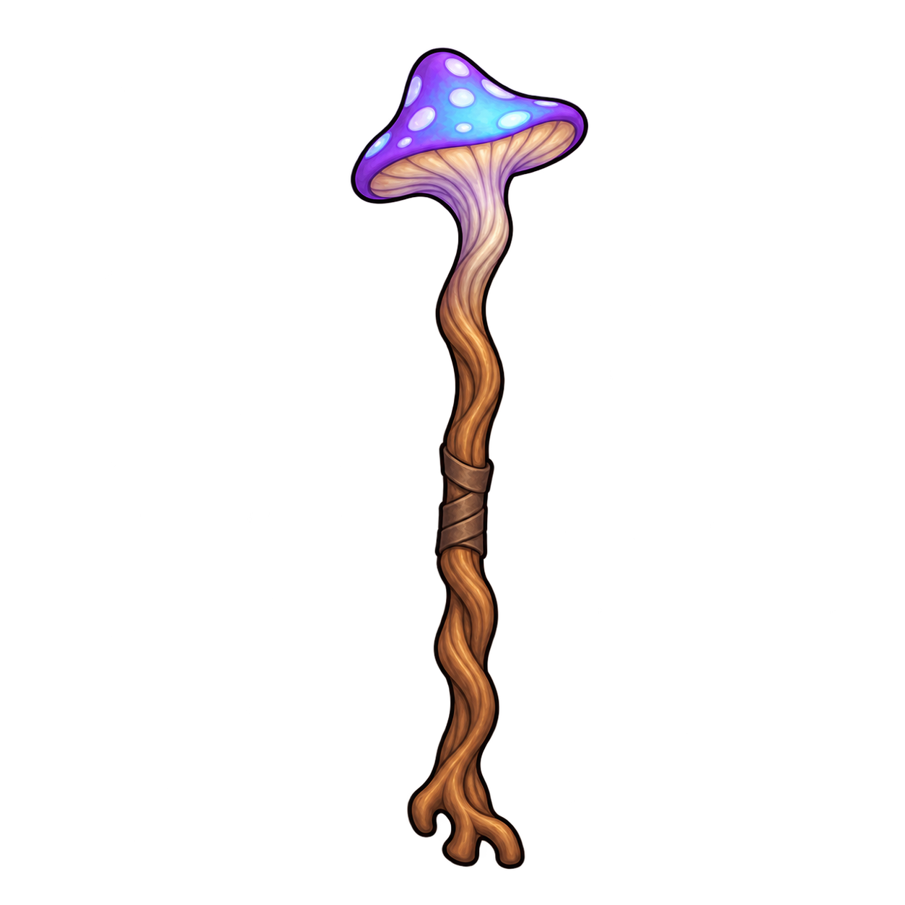

Mycean · mage champignon
Quatre vues du personnage en pose A, mains libres, plus un bâton séparé. Le chapeau, la tenue et les accessoires reprennent le concept du donjon.
Télécharger le pack Meshy · ZIP
Le personnage — un seul modèle
Utiliser la face comme image principale et les trois autres angles comme références complémentaires dans Multi-View. Chaque fichier montre une vue seule, sur fond transparent.
Le bâton — un modèle séparé
Générer le bâton à part : cette image ne va pas dans les angles complémentaires du personnage. Il sera attaché à la main dans Blender.
Bâton fongique · forme continue
Télécharger le bâton
PNG natifs1254×1254, transparence conservée. Ces illustrations ne sont pas des vues calibrées d’un modèle3D ; la reconstruction et le rig restent à tester dans Meshy. La caméra isométrique sera appliquée au modèle obtenu.
Consignes d’import · Recette et limites · Prompts ImageGen · Provenance